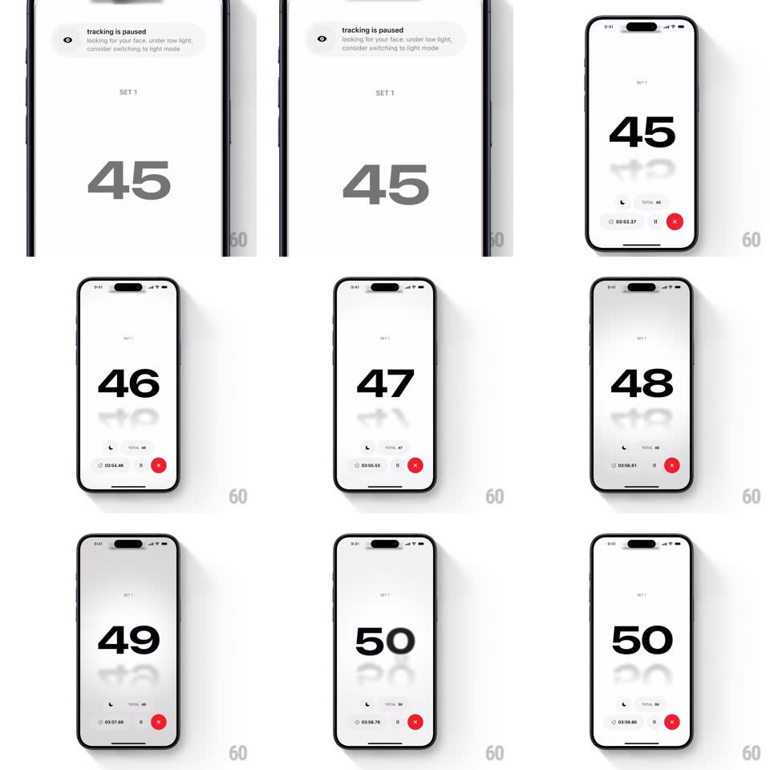

Media
Frame-by-frame

Rebuild this animation 1:1: Push's rep counter - a giant centered number counts up (45 -> 50) with a vertical rolling-drum motion: the new value rises in from below while the old one sinks and ghosts into a fading trail, over a minimal session bar and a "tracking is paused" notice.

Rebuild this animation 1:1: Push's rep counter - a giant centered number counts up (45 -> 50) with a vertical rolling-drum motion: the new value rises in from below while the old one sinks and ghosts into a fading trail, over a minimal session bar and a "tracking is paused" notice.
## Integration
Integration: stack-agnostic spec - springs given as stiffness/damping, timed motions as duration + curve; map every value to your framework and animation library of choice.
## Scene
White screen: "SET 1" eyebrow, the huge rep number center, a bottom bar (moon icon, TOTAL count, running session timer, pause glyph, red X end button), and a top toast ("tracking is paused - looking for your face: under low light, consider switching to light mode").
## Motion spec
Pattern: rolling-drum count-up with ghost trail.
- Each rep: the current number drops ~60px while fading to a blurred ghost (200ms) and the new number rises from below into place (spring ~380/22, ~350ms) - overlap makes a vertical roll.
- The ghost lingers faintly under the new number (~15% opacity, blurred) and fades fully over ~800ms - at speed, a soft trail of past digits is visible.
- TOTAL and the session timer in the bottom bar tick with their own small roll (100ms) - no bounce, just digit swap.
- The toast slides down from the top when tracking pauses (spring ~300/24, ~350ms) and retracts the same way when it resumes.
- The red X pulses once (scale 1 -> 1.1 -> 1) when a set milestone (e.g. 50) lands.
## Calibration
- The number is huge and center-anchored; the roll happens along one vertical axis with no horizontal drift.
- Blur on the ghost is essential - sharp ghosts read as overlapping text, not a trail.
## Reduced motion
Numbers crossfade; no ghosts or rolls.
## Don't miss
- The session timer keeps running during every count animation - chrome is independent.
- The toast is informational only; it never blocks the counter area.